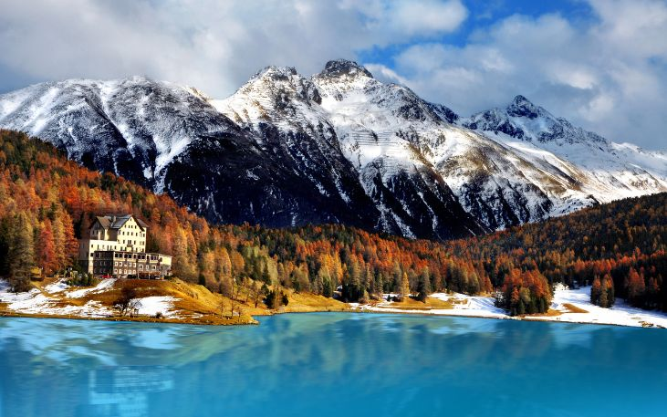

Climas da Suíça
A Suíça possui clima temperado e relevo montanhoso marcado pelos Alpes. Mesmo durante o verão europeu, chuvas intensas e frio eram comuns nas regiões da Copa.

A Influência Climática nos Jogos
O fator climático alterou o destino da Copa. O jogo Brasil e Hungria ("Batalha de Berna") ocorreu sob frio e tempestade, prejudicando a movimentação e tornando a partida violenta.
A grande final ocorreu debaixo de chuva torrencial, gerando um gramado enlameado. Esse fenômeno ficou conhecido como o Fritz-Walter-Wetter (o tempo de Fritz Walter, jogador alemão que se destacava na chuva). Os alemães usaram a inovação de chuteiras com travas rosqueáveis da Adidas para ganhar tração na lama contra a Hungria, assegurando a histórica virada.

Poluição e Contexto Ecológico
Em 1954, a conservação ambiental ainda recebia pouca atenção, sendo a prioridade dada ao crescimento econômico do pós-guerra. A forte industrialização dependente de carvão lançava gases poluentes sem filtros, provocando chuva ácida e contaminação de mananciais por resíduos industriais e esgoto.